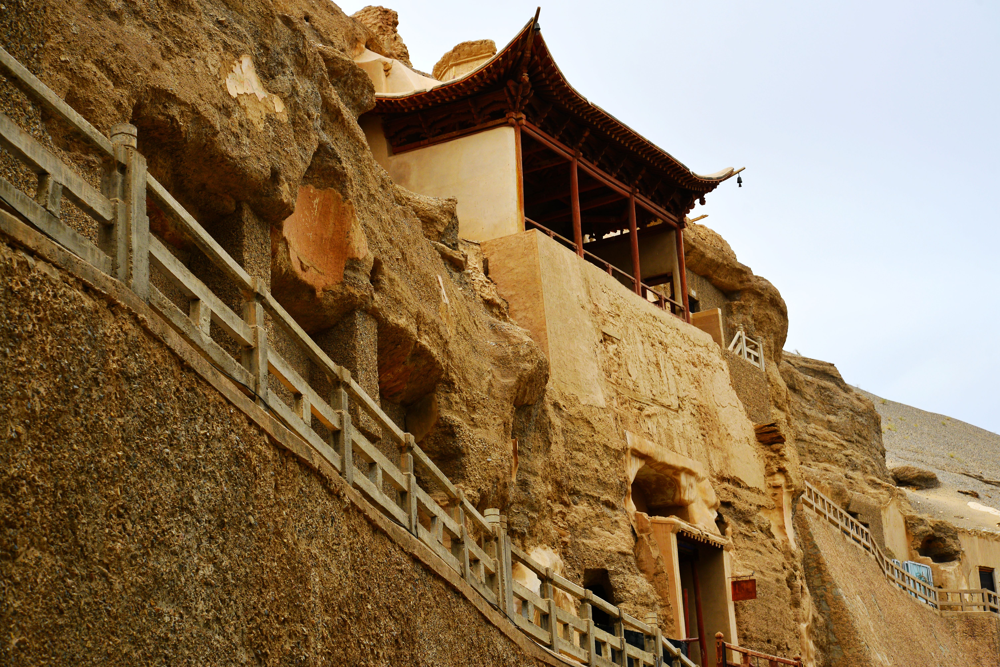
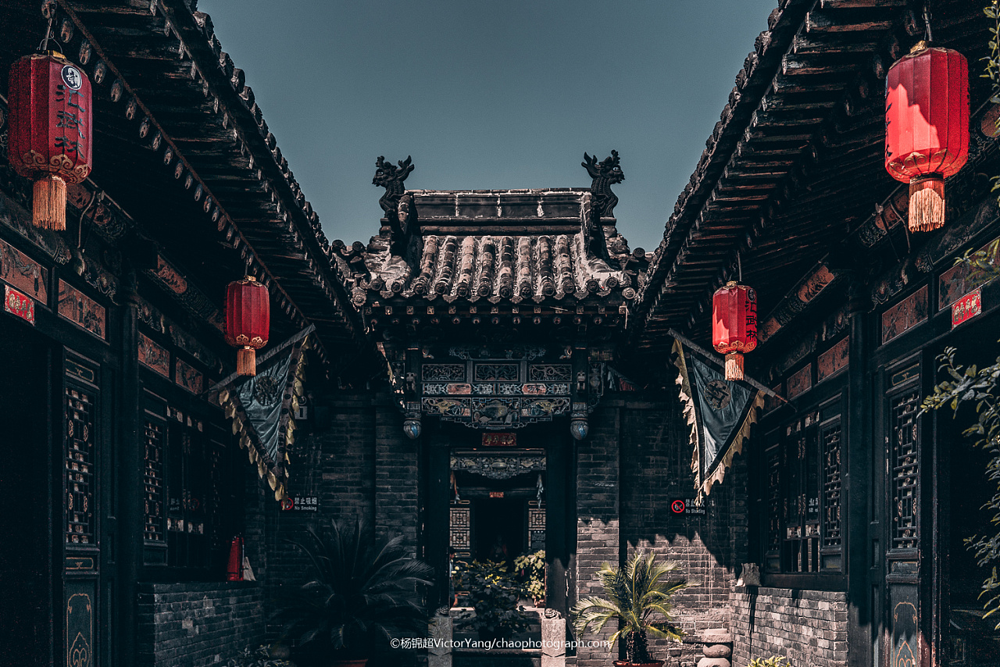
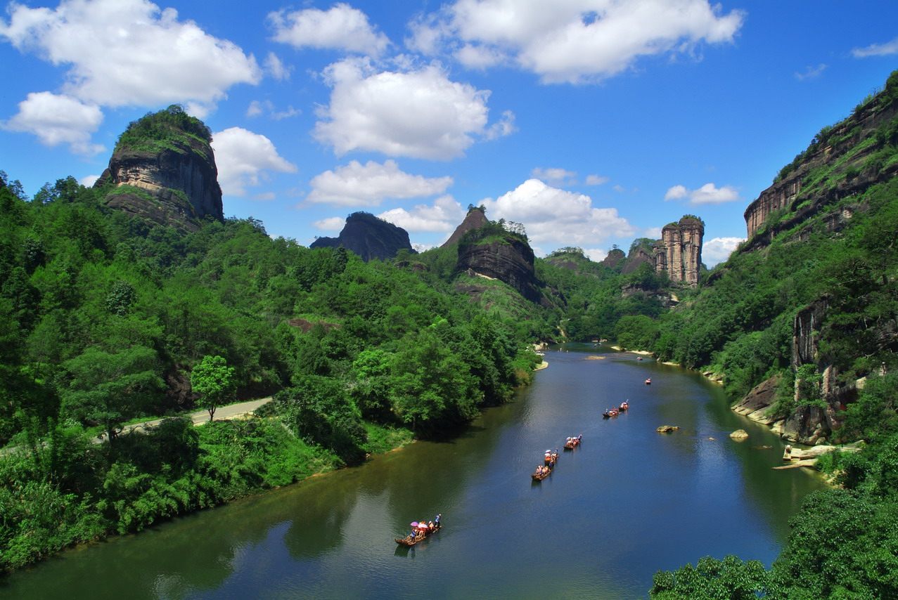

周口店北京人遗址
明清故宫
泰山

秦始皇陵及兵马俑

莫高窟
长城
黄山

承德避暑山庄及其周围寺庙
拉萨布达拉宫历史建筑群
曲阜孔庙、孔林和孔府
武当山古建筑群
峨眉山-乐山大佛
庐山国家公园
丽江古城

平遥古城
苏州古典园林

北京皇家园林-颐和园
北京皇家祭坛-天坛
大足石刻

武夷山
明清皇家陵寝
皖南古村落-西递、宏村
青城山-都江堰
龙门石窟
云冈石窟
高句丽王城、王陵及贵族墓葬
澳门历史城区
殷墟
开平碉楼与村落
福建土楼
五台山
登封“天地之中”历史建筑群

杭州西湖文化景观
元上都遗址
红河哈尼梯田文化景观

丝绸之路:长安—天山廊道的路网
大运河
吐司遗址
左江花山岩画文化景观
鼓浪屿:历史国际社区
良渚古城遗址
泉州:宋元中国的世界海洋商贸中心